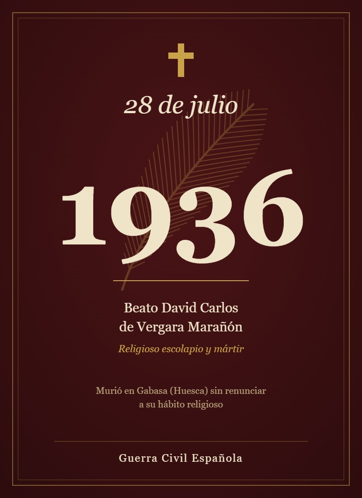

El Beato David Carlos de Vergara Marañón, cuyo nombre religioso fue David del Santísimo Sacramento, fue un religioso de las Escuelas Pías, perteneciente a la comunidad escolapia de Peralta de la Sal. Fue uno de los trece escolapios mártires que entregaron su vida durante la persecución religiosa desarrollada en España en 1936, en el contexto de la Guerra Civil Española.La Santa Sede lo identifica oficialmente como “Fr. David Carlos Marañón, frater opifex”, es decir, hermano religioso dedicado a un trabajo u oficio dentro de la comunidad.

David nació el 29 de diciembre de 1907 en Asarta, Navarra. Creció en una familia numerosa y profundamente religiosa. Según la semblanza biográfica de los mártires escolapios, su familia estaba formada por doce hijos y en ella se fomentaba especialmente la oración.Desde pequeño recibió una educación cristiana. Entre las prácticas religiosas de su familia se encontraba el rezo cotidiano del Santo Rosario. David también manifestó desde niño una especial inclinación religiosa: tenía interés por la Doctrina Cristiana y fue monaguillo. Su hermana Paula, que también fué religiosa, lo recordaba como un joven juguetón y travieso, pero al mismo tiempo muy puro y de profunda vida interior. La semblanza afirma que David “siempre se conservó muy niño”, expresión que refleja su sencillez y carácter
A sus 21 años fue cuando manifestó claramente su deseo de consagrarse a Dios. Según la semblanza, David decía: “Ya tengo 21 años y aún no he hecho nada por Dios, así que he pensado ser religioso, y para mí, ser redentorista es lo mejor”. Sin embargo, poco después ocurrió un encuentro que cambiaría el rumbo de su vida. Mientras caminaba por Zaragoza se encontró con un sacerdote que le pidió limosna y luego le preguntó: “¿No te gustaría ser escolapio?” A partir de ese momento, David quedó profundamente atraído por las Escuelas Pías.
David ingresó como aspirante en el Colegio Escolapio de Estella. Después de completar el período de prueba, pasó a Peralta de la Sal, donde se encontraba el noviciado. En junio de 1931 recibió el hábito escolapio. Al año siguiente realizó su primera profesión religiosa. A partir de entonces permaneció en Peralta de la Sal desempeñando tareas de servicio dentro de la comunidad, principalmente como cocinero y hortelano. Su profesión solemne tuvo lugar en julio de 1935. Por lo tanto, cuando murió en 1936 llevaba varios años vinculado a la vida religiosa escolapia y apenas había transcurrido un año desde su profesión solemne. La reseña biográfica lo describe de esta manera: “Encargado del huerto, trabajador y noble, era muy querido por los peraltenses”
El 28 de julio de 1936, un grupo de hombres armados llegó a Peralta con la intención de llevarse a los religiosos. Entre ellos se encontraba el Hno. David Carlos, quien comprendió que la excusa utilizada para trasladarlos era un engaño. Antes de partir, se despidió de sus compañeros con un abrazo y la frase: «¡Adiós, hasta el cielo!». Durante su detención, le ofrecieron salvar su vida si abandonaba el hábito religioso, pero David Carlos se negó a renunciar a su fe. Finalmente, fue fusilado, manteniéndose fiel a sus creencias hasta el último momento.